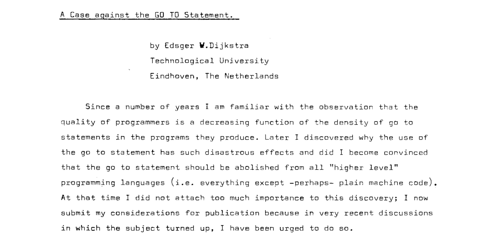
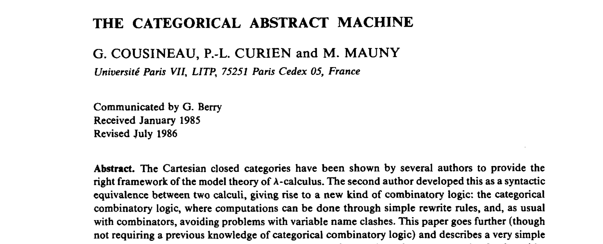
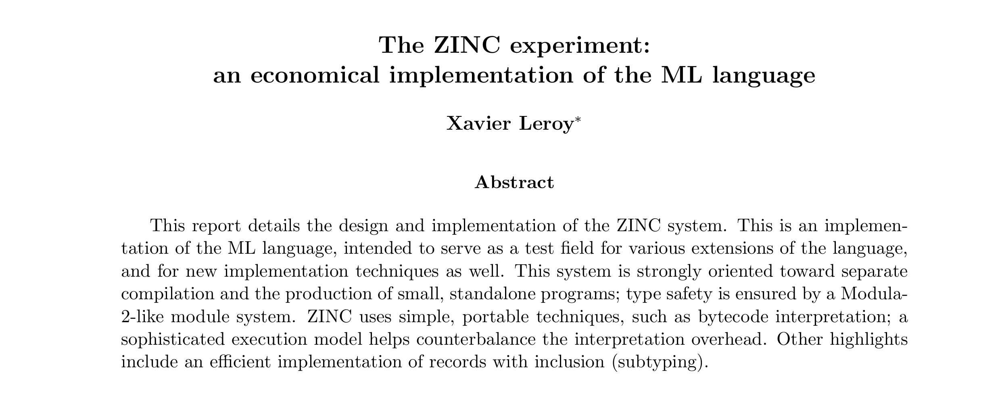
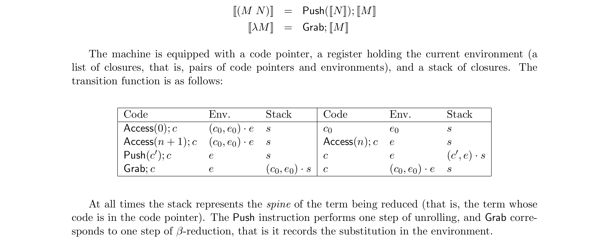
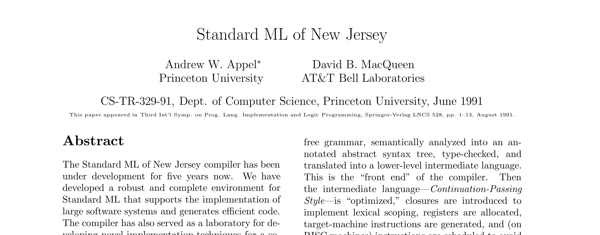
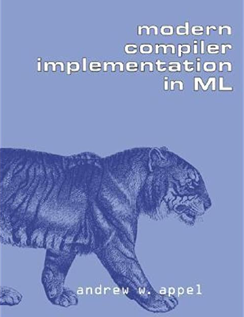
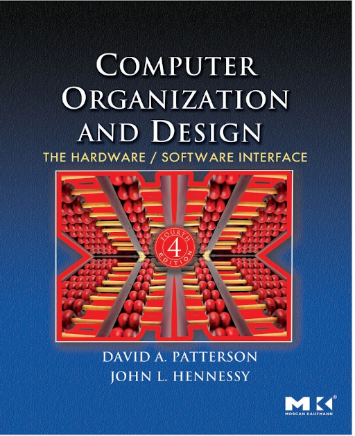

Les fonctions (récursives) décortiquées
Frédéric Cabestre
@fcabestre
I'm not a number, I'm a freelance.— Number 6, The Prisoner
Programmation Structutrée
Théorie
« Un jour j'irai vivre en Théorie,car en Théorie tout se passe bien. »— Pierre Desproges
λ-Calcul
$x$
Variable
$\lambda x.\,M$
Abstraction
$M\,N$
Application
$\lambda x.\,(f\,x) \rightarrow f$
$\eta$-reduction
$\lambda x.\,M[x] \rightarrow \lambda y.\,M[y]$
$\alpha$-conversion
$(\lambda x.\,M)\:E \rightarrow M[x:=E]$
$\beta$-reduction
λ-Calcul
$x$
Variable
$\lambda x.\,M$
Abstraction
$M\,N$
Application
$\lambda x.\,(f\,x) \rightarrow f$
$\eta$-reduction
$\lambda x.\,M[x] \rightarrow \lambda y.\,M[y]$
$\alpha$-conversion
$(\lambda x.\,M)\:E \rightarrow M[x:=E]$
$\beta$-reduction
Curryfication
(ou Schönfinkelification ?)
public static int Add(int x, int y) => x + y; Add(42, 19) // -> 61C#
public static Func<int, int> AddCurried(int x) => y => x + y; AddCurried(42)(19) // -> 61C#
var addPartial = AddCurried(42); addPartial(19) // -> 61C#
Sémantique
Donner un sens aux expressions syntaxiques
d'un langage dans un autre langage
Axiomatique
Dénotationnelle
Opérationnelle
Stratégies d'Évaluation
Si on pose :
$id = \lambda x.\,x$
Soit l'expression :
$id\,(id\,(\lambda z.\,id\, z))$
On a les reducible expressions :
$id\,(id\,(\lambda z.\,\underline{id\, z}))$
$id\,(\underline{id\,(\lambda z.\,id\, z)})$
$\underline{id\,(id\,(\lambda z.\,id\, z))}$
Appel par nom
On prend redex le plus extérieur et le plus à gauche
et sans descendre dans les abstractions (les $\lambda x.\,E$)
$\underline{id\:(id\:(\lambda z.\:id\: z))}$
$\underline{id\:(\lambda z.\:id\: z)}$
$\lambda z.\:id\: z$
Exemples : Algol60, Miranda, Lazy ML, Clean... Haskell
Appel par valeur
On prends le redex le plus intérieur et le plus à gauche
et sans descendre dans les abstractions (les $\lambda x.\,E$)
$id\:(\underline{id\:(\lambda z.\:id\: z)})$
$\underline{id\:(\lambda z.\:id\: z)}$
$\lambda z.\:id\: z$
Exemples : tous les autres langages !
Equivalence

OCaml
OCaml
OCaml
Interlude
Pratique
« En théorie, il n'y a pas de différence entre la théorie et la pratique.Mais en pratique, il y en a une. »— Yogi Berra
Compilation
Sorte de sémantique formelle
Langage machine :
Virtuelle (JVM, CLI...)
Concrète (x86, ARM...)
Instruction Set Architecture
JUMP
CALL / RETURN
Application Binary Interface
Commençons simple...
let Add x y = x + yF#
public static int Add(int x, int y) => x + y;C#
Arguments passés à la fonction (valeurs associée à x et y)
Les variables locales (scalaires, tableau, structures...)
Les résultats de calculs intermédiaires (par exemple x + y)
Le point (adresse) de retour
Qui a pensé au mot pile... ou stack pour les anglophiles ?
FORTRAN
FORmula TRANslator (avril 1957 - John Backus)
F66 apparition de SUBROUTINE et FUNCTION (mars 1966)
Allocation statique à côté du code de la fonction
Plusieurs instances de la même fonction ?
F77 récursivité supportée par certains compilateurs (avril 1978)
F90 récursivité officielle, RECURSIVE (standard ANSI 1992)
Récursivité simple
Un cas de base ou cas d'arrêt
Un cas général définit au rang $n$ en fonction du rang $n - 1$
let rec Fact = function | 0u -> 1u | (n: uint) -> n * Fact(n - 1u)F#
public static uint Fact(uint n) => n switch { 0u => 1u, _ => n * Fact(n - 1) };C#
Récursivité mutuelle
Plusieurs fonctions récursives se définissant
les unes part rapport aux autres
let rec IsEven = function | 0u -> true | (n: uint) -> IsOdd(n - 1u) and IsOdd = function | 1u -> true | (n: uint) -> IsEven(n - 1u)F#
Mise en œuvre
Plusieurs instances ou activations d'une même fonction
Enregistrement d'activation
... Ou activation frame
... Ou activation record
Crée à l'activation de la fonction
Plus utile à sa désactivation
$\Rightarrow$ Pile
Mise en œuvre
Main Fact(2) Fact(1) Fact(0) Fact(1) Fact(2) MainC#
Pile non inclue
Évolution Architecturale
Architectures...
à accumulateur
à registres généraux
à pile et processeurs langages
Reduced Instruction Set Computer
IBM 801 (1975-1980)
David Paterson à Berkeley
Dec Alpha, IBM POWER, SPARC... (1980 et après)
ARM, M1 et RISC-V (aujourd'hui)
Évolution Architecturale
Moins d'instructions plus élémentaires
Plus de registres généraux
Pas de discipline de pile
Adresse de retour dans un registre
Plus d'optimisations possibles :
Fonctions feuilles
Allocation de registres inter procedure
Éclatement de donnés sur plusieurs registres
...
Appel terminal
La dernière action d'une fonction est un appel de fonction
let rec FactTailRecursive acc = function | 0u -> acc | (n: uint) -> FactTailRecursive(n * acc) (n - 1u)F#
public static uint FactTailRecursive(uint acc, uint n) => n switch { 0u => acc, _ => FactTailRecursive(n * acc, n - 1) };C#
Appel terminal
Puisqu'il ne restera plus rien à faire au retour de la fonction appelée...
Autant réutiliser l'enregistrement d'activation courant !
Économie d'allocation (espace constant)
Appel plus rapide (JUMP vs. CALL)
Style par continuation
Récusivité terminale
Mise en œuvre
Main Fact(1, 2) Fact(2, 1) Fact(2, 0) MainC#

Code Généré
.method public hidebysig static unsigned int32 FactTailRecursive(unsigned int32 acc, unsigned int32 n ) cil managed { [...] IL_0000: ldc.i4.1 IL_0001: brtrue.s IL_0004 IL_0003: nop IL_0004: ldarg.1 // n IL_0005: brfalse.s IL_0009 IL_0007: br.s IL_000d IL_0009: ldarg.0 // acc IL_000a: stloc.0 // V_0 IL_000b: br.s IL_001b IL_000d: ldarg.1 // n IL_000e: ldarg.0 // acc IL_000f: mul IL_0010: ldarg.1 // n IL_0011: ldc.i4.1 IL_0012: sub IL_0013: call unsigned int32 CSharp.Factorial::FactTailRecursive( unsigned int32, unsigned int32 ) IL_0018: stloc.0 // V_0 IL_0019: br.s IL_001b IL_001b: ldc.i4.1 IL_001c: brtrue.s IL_001f IL_001e: nop IL_001f: ldloc.0 // V_0 IL_0020: ret }IL (C#)
.method public static unsigned int32 FactTailRecursive(unsigned int32 acc, unsigned int32 _arg1 ) cil managed { [...] IL_0000: ldarg.1 // _arg1 IL_0001: stloc.0 // V_0 IL_0002: ldloc.0 // V_0 IL_0003: switch (IL_000e) IL_000c: br.s IL_0010 IL_000e: ldarg.0 // acc IL_000f: ret IL_0010: ldloc.0 // V_0 IL_0011: stloc.1 // n IL_0012: ldloc.1 // n IL_0013: ldarg.0 // acc IL_0014: mul IL_0015: ldloc.1 // n IL_0016: ldc.i4.1 IL_0017: sub IL_0018: starg.s _arg1 IL_001a: starg.s acc IL_001c: br.s IL_0000 }IL (F#)
Code produit
.method public hidebysig static unsigned int32 FactTailRecursive(unsigned int32 acc, unsigned int32 n ) cil managed { [...] IL_0000: ldc.i4.1 IL_0001: brtrue.s IL_0004 IL_0003: nop IL_0004: ldarg.1 // n IL_0005: brfalse.s IL_0009 IL_0007: br.s IL_000d IL_0009: ldarg.0 // acc IL_000a: stloc.0 // V_0 IL_000b: br.s IL_001b IL_000d: ldarg.1 // n IL_000e: ldarg.0 // acc IL_000f: mul IL_0010: ldarg.1 // n IL_0011: ldc.i4.1 IL_0012: sub IL_0013: call unsigned int32 CSharp.Factorial::FactTailRecursive( unsigned int32, unsigned int32 ) IL_0018: stloc.0 // V_0 IL_0019: br.s IL_001b IL_001b: ldc.i4.1 IL_001c: brtrue.s IL_001f IL_001e: nop IL_001f: ldloc.0 // V_0 IL_0020: ret }IL (C#)
.method public static unsigned int32 FactTailRecursive(unsigned int32 acc, unsigned int32 _arg1 ) cil managed { [...] IL_0000: ldarg.1 // _arg1 IL_0001: stloc.0 // V_0 IL_0002: ldloc.0 // V_0 IL_0003: switch (IL_000e) IL_000c: br.s IL_0010 IL_000e: ldarg.0 // acc IL_000f: ret IL_0010: ldloc.0 // V_0 IL_0011: stloc.1 // n IL_0012: ldloc.1 // n IL_0013: ldarg.0 // acc IL_0014: mul IL_0015: ldloc.1 // n IL_0016: ldc.i4.1 IL_0017: sub IL_0018: starg.s _arg1 IL_001a: starg.s acc IL_001c: br.s IL_0000 }IL (F#)
Comment rebondir ?
On voudrait exprimer un algorithme récursif...
Mais le compilateur ne nous aide pas...
Comment forcer le dépilement l'activation courante ?
En utilisant un trampoline
Principe :
Retourner une valeur qui exprime
un « reste à faire » ou un résultat
Invoquer le « reste à faire » dans une boucle
ou retourner le résultat
Trampoline
public interface ITailRec<out T> { public T Run() { ... } } public struct Return<T> : ITailRec<T> { public T Value { get; init; } } public struct Suspend<T> : ITailRec<T> { public Func<ITailRec<T>> Thunk { get; init; } }C#
public static ITailRec<uint> FactTrampoline(uint acc, uint n) => n switch { 0 => new Return<uint> { Value = acc }, _ => new Suspend<uint> { Thunk = () => FactTrampoline(n * acc, n - 1) } }; }C#
Trampoline
FactTrampoline(1, 3).Run()C#
public interface ITailRec<out T> { public T Run() { var current = this; for (;;) switch (current) { case Return<T> @return: return @return.Value; case Suspend<T> suspend: current = suspend.Thunk(); break; } } }C#
Coda
Fonctions d'ordre supérieur
Continuations de premier ordre
Coroutines
...
Ressources


Ressources
Frédéric Cabestre
@fcabestre